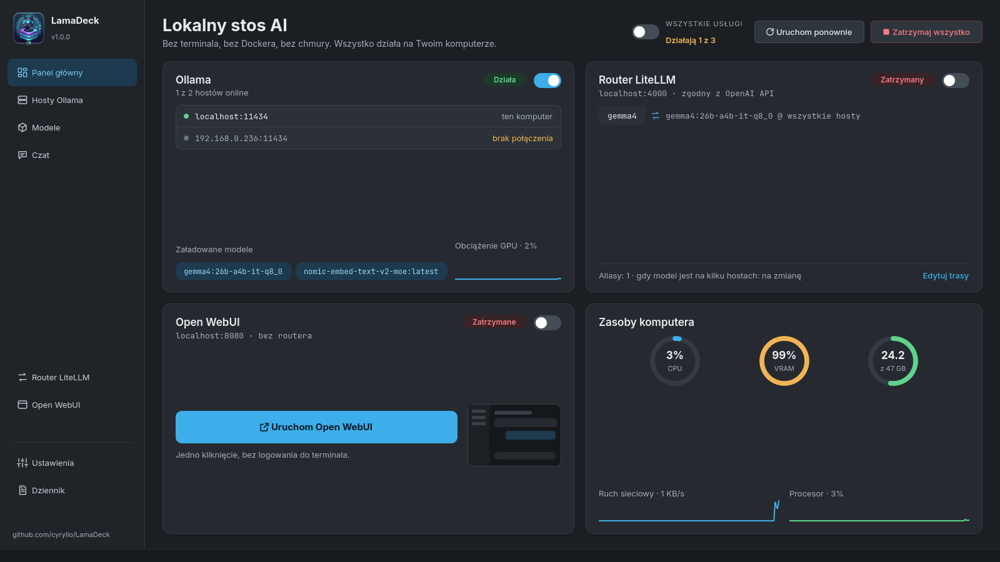
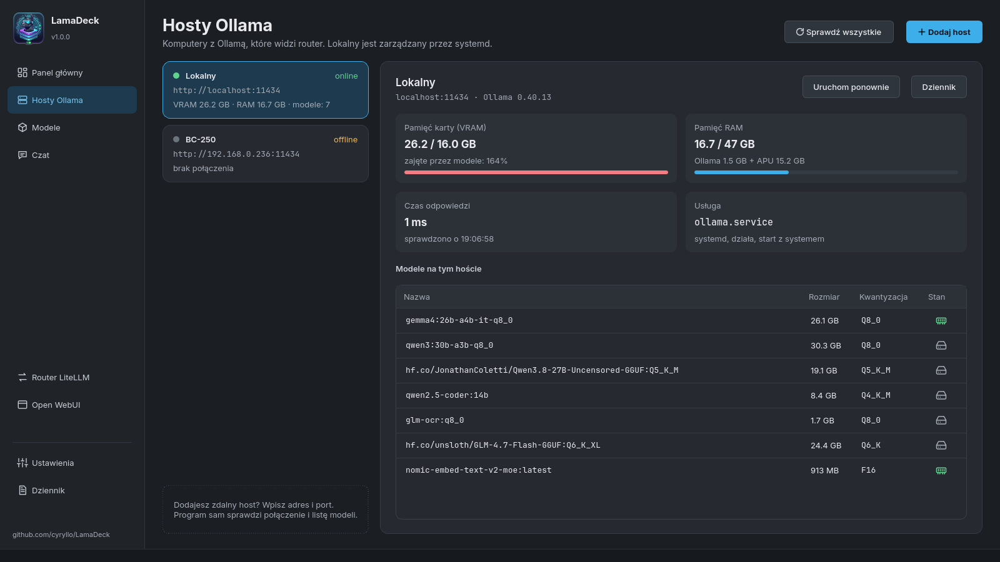
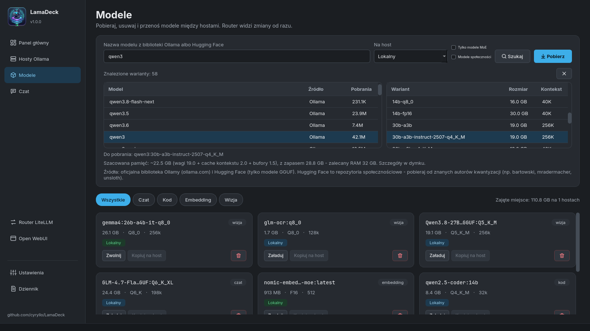
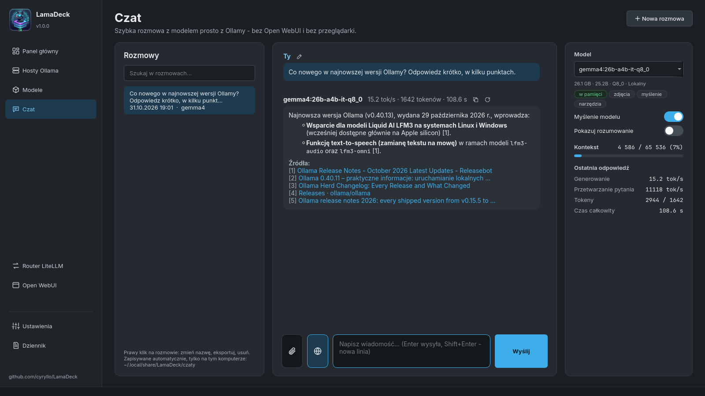
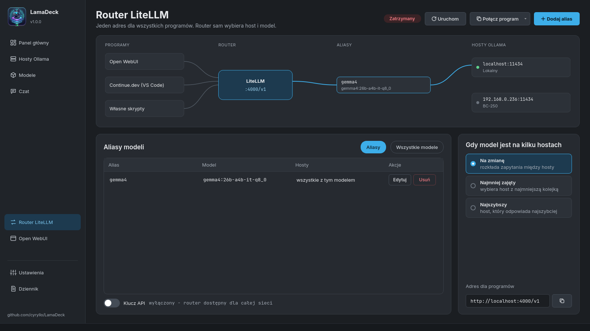
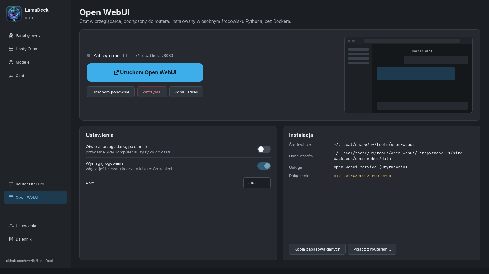
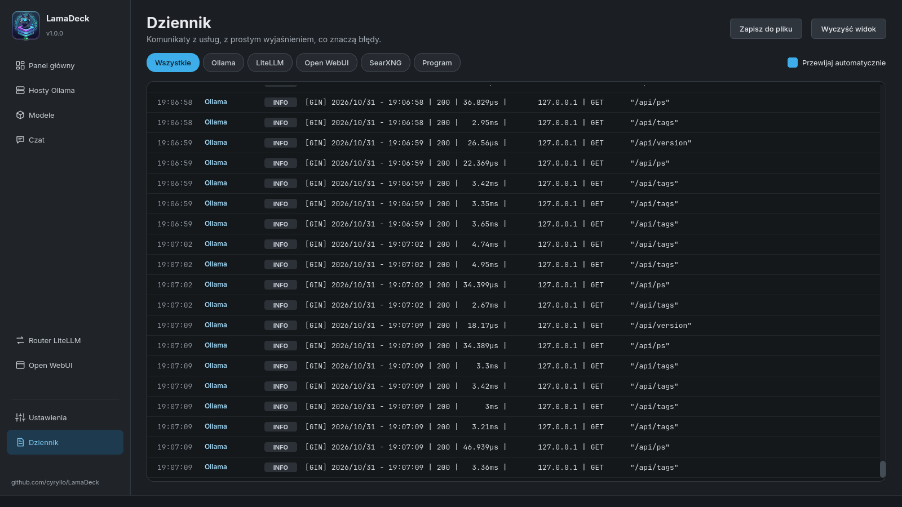
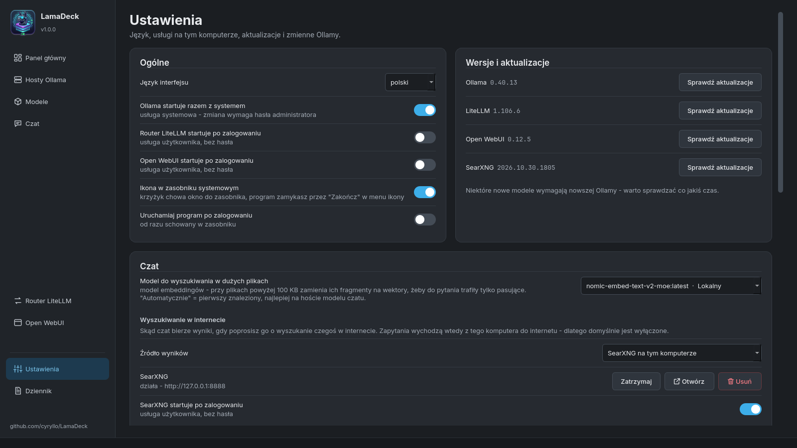
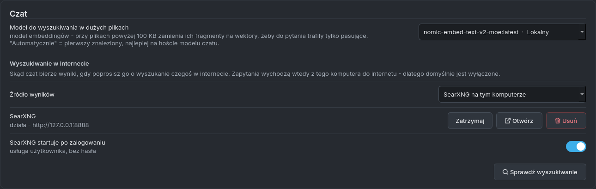
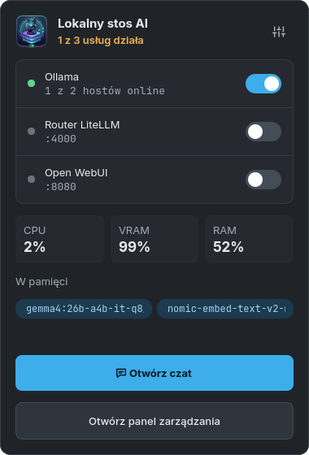

LamaDeck — instrukcja
Co potrafi LamaDeck i jak włączyć każdą jego część. Ekrany są opisane w kolejności, w jakiej widać je w pasku bocznym. (In English: GUIDE.md)
Instalacja i pierwsze uruchomienie
Debian / Ubuntu — repozytorium APT dodajesz raz, potem LamaDeck aktualizuje się razem z systemem:
sudo curl -fsSLo /usr/share/keyrings/lamadeck-archive-keyring.gpg \
https://cyryllo.github.io/LamaDeck/apt/lamadeck-archive-keyring.gpg
sudo curl -fsSLo /etc/apt/sources.list.d/lamadeck.sources \
https://cyryllo.github.io/LamaDeck/apt/lamadeck.sources
sudo apt update
sudo apt install lamadeckDziała też plik .deb ze strony wydań: sudo apt install ./lamadeck_*_all.deb dodaje to samo repozytorium.
Każda inna dystrybucja — pobierz LamaDeck-<wersja>-x86_64.AppImage ze strony wydań, potem chmod +x LamaDeck-*-x86_64.AppImage i uruchom. Przy pierwszym starcie zapyta, czy dodać go do menu aplikacji.
LamaDeck znajdziesz w menu w sekcji Narzędzia. Całą resztę — Ollamę, router, Open WebUI, SearXNG — instalujesz już z poziomu programu, każdą jednym przyciskiem.
Do niczego, co opisuje ta instrukcja, nie potrzebujesz terminala. Gdy coś wymaga uprawnień administratora (instalacja Ollamy, zmiana jej ustawień), pojawia się zwykłe okienko hasła KDE.
Panel główny


Pierwszy ekran pokazuje cały stos na tym komputerze:
- Ollama — przełącznik uruchamia i zatrzymuje usługę Ollama. Karta pokazuje hosty online, modele wczytane do pamięci i obciążenie karty graficznej.
- Router LiteLLM — jeden adres dla wszystkich programów (patrz Router LiteLLM).
- Open WebUI — duży przycisk znaczy Zainstaluj, Uruchom albo Otwórz w przeglądarce, zależnie od stanu.
- Zasoby komputera — CPU, VRAM i RAM, ruch sieciowy i obciążenie procesora, odświeżane co dwie sekundy.
Instalacja usług: karta czegoś, czego jeszcze nie ma, pokazuje przycisk Zainstaluj zamiast przełącznika. Ollama instaluje się oficjalnym skryptem (pyta o hasło); router i Open WebUI instalują się tylko dla Twojego konta, bez hasła i bez Dockera. Instalacja idzie w tle, a gdy się skończy, dostajesz powiadomienie na pulpicie.
Na górze Wszystkie usługi uruchamia albo zatrzymuje wszystko we właściwej kolejności, Uruchom ponownie uruchamia je od nowa, a Zatrzymaj wszystko zatrzymuje.
Hosty Ollama


LamaDeck obsługuje Ollamę na kilku komputerach naraz — na tym i na innych w domowej sieci.
- Dodaj host — wpisz adres drugiego komputera (np.
192.168.0.236).http://i port11434program dopisze sam. - Na tamtym komputerze Ollama musi przyjmować połączenia z sieci. Jeśli też ma LamaDeck: *Ustawienia → zmienne środowiskowe Ollamy → przełącznik
OLLAMA_HOST*, potem Zapisz. - Przy każdym hoście widać wersję Ollamy, czas odpowiedzi, pamięć zajętą przez modele i listę modeli (zielona kość pamięci = wczytany, szary dysk = tylko na dysku).
- Pamięć RAM tego komputera pokazuje, ile naprawdę zajmuje Ollama. Na komputerach z APU (grafika wbudowana w procesor) część modelu leży w zwykłym RAM-ie współdzielonym z kartą — widać to jako „Ollama X GB + APU Y GB”, szczegóły w dymku.
- Uruchom ponownie i Dziennik działają tylko dla tego komputera. Tego komputera nie da się usunąć z listy; pozostałe hosty mają przycisk usuwania.
Modele


Szukanie i pobieranie modelu:
- Wpisz nazwę (np.
qwen3) i naciśnij Szukaj. LamaDeck szuka naraz w oficjalnej bibliotece Ollamy i na Hugging Face (pliki GGUF). - Kliknij wynik — po prawej zobaczysz wszystkie warianty z prawdziwym rozmiarem pliku i długością kontekstu.
- Kliknij wariant. Pod spodem widać szacowaną potrzebną pamięć.
- Wybierz komputer w Na host i naciśnij Pobierz. Pasek postępu pokazuje rozmiar i prędkość; Anuluj przerywa, a kolejne pobieranie zacznie od miejsca, w którym przerwało.
Jeśli znasz dokładną nazwę (llama3.2:3b, hf.co/autor/repo:Q4_K_M), wpisz ją i naciśnij Enter — pobieranie zacznie się od razu. Wklejony link do ollama.com albo huggingface.co otwiera warianty tego modelu.
Pola obok wyszukiwarki:
- Tylko modele MoE — tylko modele typu mixture of experts. Przy każdym słowie liczą tylko część modelu, więc działają dużo szybciej na APU i komputerach bez mocnej karty graficznej.
- Modele społeczności — także modele, które na ollama.com opublikowali inni ludzie (
autor/model). Domyślnie są ukryte, bo Ollama ich nie sprawdza.
Zainstalowane modele to kafelki ze wszystkich hostów, z filtrami (Czat, Kod, Embedding, Wizja). Każdy kafelek ma Załaduj / Zwolnij (do pamięci i z niej), Kopiuj na host (pobiera ten sam model na inny komputer) i przycisk usuwania.
Czat


Prosty czat z dowolnym modelem na dowolnym hoście, prosto z Ollamy — działa bez Open WebUI i bez routera.
Podstawy:
- Model wybierasz po prawej. Tagi pod nim mówią, co potrafi: zdjęcia, myślenie, narzędzia, i czy jest już w pamięci.
- Enter wysyła, Shift+Enter to nowa linia. Gdy model pisze, Wyślij zmienia się w Zatrzymaj.
- Pod każdą odpowiedzią: tokeny na sekundę, liczba tokenów i czas. Prawa karta pokazuje szczegóły i Kontekst — ile pamięci rozmowy modelu jest już zajęte. Od 80% pojawia się ostrzeżenie; wtedy zacznij Nową rozmowę.
- Myślenie modelu włącza albo wyłącza rozumowanie w modelach, które myślą przed odpowiedzią (qwen3, gemma4…) — wyłączone daje krótką odpowiedź w ułamku sekundy. Pokazuj rozumowanie pokazuje je w rozmowie.
- Ikony przy odpowiedzi: kopiuj odpowiedź, wygeneruj ponownie (modelem wybranym teraz — wygodne do porównywania modeli) i popraw ostatnie pytanie. Ikona nad blokiem kodu kopiuje sam kod.
Załączniki — przycisk ze spinaczem, przeciągnięcie pliku na okno albo Ctrl+V ze zrzutem ekranu:
- zdjęcia (dla modeli z tagiem zdjęcia),
- dokumenty: PDF, Word, Excel, PowerPoint, LibreOffice, EPUB,
- pliki tekstowe: kod,
.txt,.md,.csv… - Pliki powyżej 100 KB (do 20 MB) są przeszukiwane fragmentami zamiast wklejane w całości. Potrzebny jest do tego model embeddingów — Ustawienia → Czat → Model do wyszukiwania w dużych plikach; jeśli żadnego nie masz, przycisk Pobierz w tym miejscu pobierze zalecany.
Linki: wklej link do pytania, a LamaDeck sam pobierze stronę i dołączy jej tekst.
Wyszukiwanie w internecie (odpowiedź podaje źródła [1], [2]…):
- Ustawienia → Czat → Wyszukiwanie w internecie → Źródło wyników — wybierz SearXNG na tym komputerze i naciśnij Zainstaluj (kilka minut, bez hasła). Albo wybierz własny serwer SearXNG, albo Ollamę z kluczem API z darmowego konta na ollama.com.
- Sprawdź wyszukiwanie pokaże, czy działa.
- W czacie kliknij przycisk z globusem obok spinacza — podświetli się na niebiesko. Od teraz każde pytanie jest szukane w internecie, dopóki nie klikniesz go ponownie.
Model pisze 1–3 zapytania, LamaDeck czyta do 5 stron, wybiera fragmenty pasujące do pytania, a odpowiedź ma pod spodem listę klikalnych źródeł. W dymku widać, co program właśnie robi.
Rozmowy zapisują się same po każdej odpowiedzi (tylko na tym komputerze). Lista po lewej je otwiera i przeszukuje tytuły oraz treść. Prawy klik na rozmowie: Zmień nazwę (też dwuklik albo F2), Eksportuj do Markdown albo Usuń rozmowę.
Router LiteLLM


Router daje wszystkim programom jeden adres, http://localhost:4000/v1 (zgodny z API OpenAI), za którym są modele ze wszystkich Twoich hostów.
- Uruchom go startuje. Zmiany tras działają po Uruchom ponownie router — przypomina o tym pasek.
- Dodaj alias — stała nazwa, np.
codealbochat, dla wybranego modelu. Programy używają aliasu, więc model za nim zmienisz bez zmieniania czegokolwiek w nich. - Gdy model jest na kilku hostach — na zmianę, najmniej zajęty albo najszybszy.
- Wszystkie modele — które modele router udostępnia pod własnymi nazwami.
- Połącz program — gotowe ustawienia dla Continue.dev (
config.yamldo skopiowania) i instrukcja krok po kroku dla Open WebUI. - Klucz API — domyślnie wyłączony (modeli może używać każdy w Twojej sieci); włączony trafia od razu do ustawień Continue.
Open WebUI


Pełny czat w przeglądarce (konta użytkowników, bazy wiedzy, głos) — instalowany bez Dockera.
- Duży przycisk instaluje, uruchamia albo otwiera Open WebUI w przeglądarce. Pod nim Uruchom ponownie, Zatrzymaj i Kopiuj adres.
- Ustawienia: otwieranie przeglądarki po starcie, Wymagaj logowania (da się wyłączyć tylko, dopóki nie ma żadnych kont) i port.
- Kopia zapasowa danych zapisuje wszystkie czaty i konta do pliku ZIP.
- Połącz z routerem... pokazuje, jak dodać router w Open WebUI, żeby widział modele ze wszystkich Twoich hostów.
Dziennik


Komunikaty Ollamy, LiteLLM, Open WebUI, SearXNG i samego LamaDeck w jednym miejscu. Przyciski na górze filtrują po usłudze. Błędy mają proste wyjaśnienie, co znaczą, a gdy to pasuje — link do hosta. Zapisz do pliku zachowuje dziennik, Wyczyść widok tylko go chowa.
Do dziennika usługi Ollama potrzebne jest pozwolenie: Wczytaj teraz czyta go jednorazowo (pyta o hasło), Zezwól na stałe dopisuje Twoje konto do grupy systemd-journal (działa po ponownym zalogowaniu).
Ustawienia


- Język interfejsu — siedem języków, zmiana od razu.
- Autostart — Ollama razem z systemem, router i Open WebUI po zalogowaniu.
- Ikona w zasobniku systemowym i Uruchamiaj program po zalogowaniu — patrz Zasobnik systemowy.
- Wersje i aktualizacje — Sprawdź aktualizacje dla Ollamy, LiteLLM, Open WebUI i SearXNG. Nic nie aktualizuje się samo.
- Czat — model do wyszukiwania w dużych plikach i źródło wyszukiwania w internecie (patrz Czat):


- Zmienne środowiskowe Ollamy (niżej na tym samym ekranie) — każda z krótkim opisem. Zastosuj zalecane wartości wypełnia formularz punktem startowym (kontekst 16k tokenów, 30 minut w pamięci, dwa modele naraz, Vulkan dla grafiki AMD) — tylko wypełnia, więc najpierw go przejrzyj. Zapisz zapisuje wszystko naraz i raz uruchamia Ollamę ponownie (pyta o hasło).
Zasobnik systemowy


Włącz Ustawienia → Ikona w zasobniku systemowym. Wtedy:
- lewy klik na ikonie — to małe okienko: przełączniki usług, CPU / VRAM / RAM, modele w pamięci, Otwórz czat i Otwórz panel zarządzania,
- środkowy klik — główne okno, prawy — menu z Zakończ,
- zamknięcie okna tylko chowa je do zasobnika; program kończysz przez Zakończ w menu ikony,
- Uruchamiaj program po zalogowaniu startuje LamaDeck od razu schowany w zasobniku.
Gdzie są Twoje dane
| Co | Gdzie |
|---|---|
| Ustawienia | ~/.config/LamaDeck/LamaDeck.conf |
| Rozmowy z czatu | ~/.local/share/LamaDeck/czaty/ |
| SearXNG | ~/.local/share/LamaDeck/searxng/, ustawienia w ~/.config/LamaDeck/searxng/ |
| Ustawienia routera | ~/.config/LamaDeck/litellm_config.yaml |
| Open WebUI | ~/.local/share/uv/tools/open-webui/ |
Usunięcie ani aktualizacja LamaDeck ich nie ruszają. Nic nie wychodzi z Twojego komputera poza wyszukiwaniem w internecie, które włączasz sam.
Problemy
- Host jest „offline” — sprawdź, czy komputer jest włączony i czy Ollama na nim przyjmuje połączenia z sieci (
OLLAMA_HOST, patrz Hosty Ollama). Dziennik wyjaśni błąd. - Model zapomina początek rozmowy — kontekst jest pełny (pasek w czacie robi się czerwony). Zacznij nową rozmowę albo zwiększ
OLLAMA_CONTEXT_LENGTHw Ustawieniach. - Duży plik albo wyszukiwanie długo czeka — obok modelu czatu wczytuje się model embeddingów. Przy
OLLAMA_MAX_LOADED_MODELS=2(jedna z zalecanych wartości) oba zostają w pamięci. - Wyszukiwanie nie daje wyników — naciśnij Sprawdź wyszukiwanie w Ustawieniach; SearXNG mógł zostać zatrzymany. Niektóre wyszukiwarki czasem pytają o captchę — SearXNG korzysta wtedy z pozostałych.
Znalazłeś błąd? Zgłoś go na GitHubie.